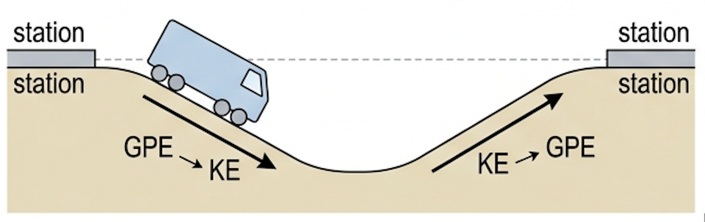
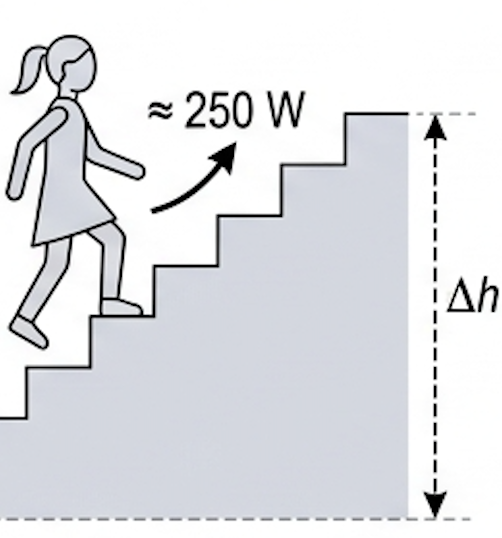
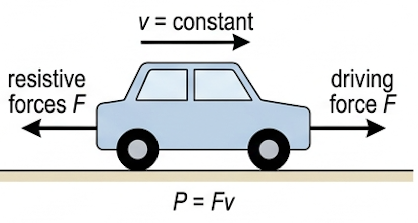
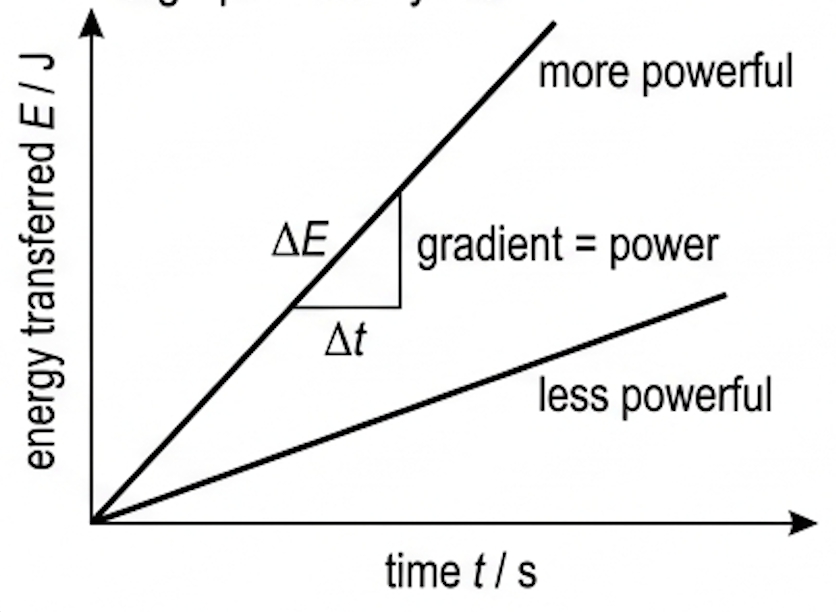
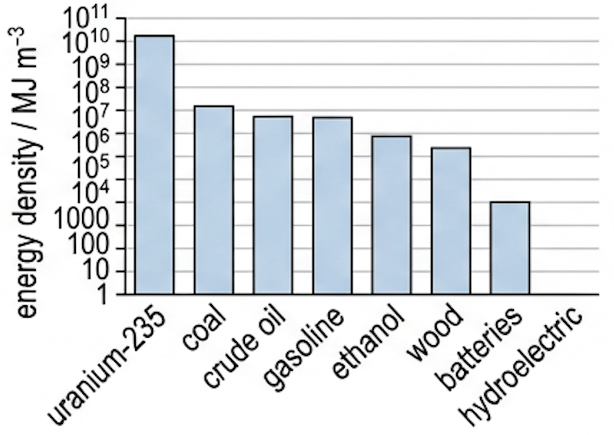
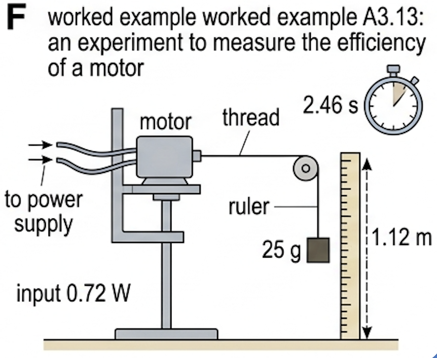
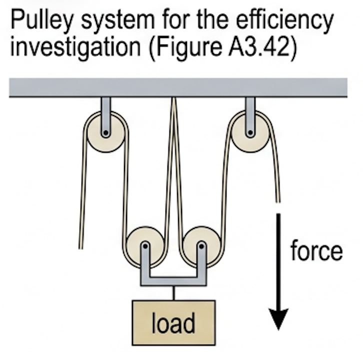
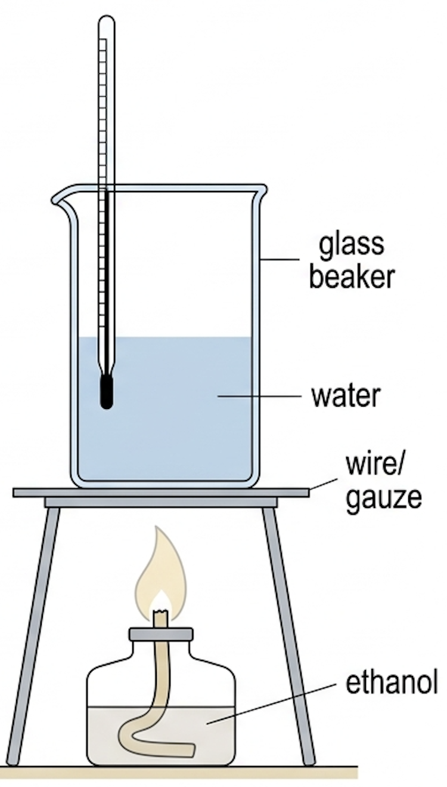

🎯 Hook – the train track that saves energy by going downhill first
The kinetic energy of a long, fast-moving train is considerable — values of \(10^{8}\ \text{J}\) or more are not unusual. When the train stops, all of that energy has to be transferred to other forms, and unless it can be recovered the same amount has to be transferred again to accelerate the train. That is very wasteful. When designing a new urban train system it has been suggested that energy could be saved by shaping the track as shown below, dipping between stations. Nothing is added — the track profile just recycles the train's own energy.

⚡ Power: the rate of energy transfer
Syllabus statement: power, \(P\), is the rate of work done, or the rate of energy transfer, as given by \(P = \dfrac{E}{t} = Fv\).
When energy is transferred by people, animals or machines to do something useful, we are often concerned about how much time the change takes. If the same amount of useful work is done by two people (or machines), the one that does it faster is said to be more powerful. (In everyday use the word power is used more vaguely, often related to strength and without any connection to time.)
Some values of power in everyday life:
| Device / activity | Power | Meaning |
|---|---|---|
| Calculator | 0.0001 W | transfers energy at a rate of 0.0001 J every second |
| Light bulb | 7 W | transfers energy from electricity to light and thermal energy at 7 J every second |
| Girl walking upstairs | ≈ 250 W | transfers chemical energy to gravitational energy at about 250 W |
| An average home | ≈ 1 kW | in many countries, the average rate of use of electrical energy |
| Water heater | 2 kW | electricity to internal energy at 2000 J every second |
| Family car | ≈ 100 kW | typical maximum output power |
| Oil-fired power station | 500 MW | chemical to electrical energy at 500 000 000 J every second |

🚗 Power needed to maintain a constant speed
It is common for a vehicle to maintain a constant velocity. Under those circumstances the forward force, \(F\), from the engines is equal in magnitude but opposite in direction to the total resistive forces. The power needed to maintain a constant velocity \(v\) against those forces follows directly from the definition:

📊 Efficiency: how much of the input does something useful
Syllabus statement: efficiency, \(\eta\), in terms of energy transfer or power, as given by \(\dfrac{E_{\text{output}}}{E_{\text{input}}} = \dfrac{P_{\text{output}}}{P_{\text{input}}}\).
It is an ever-present theme of physics that, whatever we do, some of the energy transferred is ‘wasted’ (dissipated) because it is transferred to less ‘useful’ forms. In mechanics this is usually because friction, or air resistance, transfers kinetic energy to internal energy and thermal energy. The useful energy we get out of any energy transfer is always less than the total energy transferred.
When an electrical water heater is used, nearly all of the energy transferred makes the water hotter and can therefore be described as ‘useful’. But when a mobile phone charger is used, only some of the energy is transferred to the battery — most of the rest is transferred to thermal energy. Driving a car involves transferring chemical energy from the fuel, and the useful energy is considered to be the kinetic energy of the vehicle, although at the end of the journey there is no kinetic energy remaining. A process that results in a greater useful energy output for a given input is described as being more efficient.
It is possible to discuss the efficiency of any energy transfer, such as the efficiency with which our bodies transfer the chemical energy in food to other forms. However, the concept is most commonly used for electrical devices and engines, especially where the input energy or power is easily calculated. Sometimes we need to be clear exactly what we are talking about: when discussing the efficiency of a car, do we mean only the engine, or the whole car in motion along a road with all the energy dissipation due to resistive forces?
Efficiencies of machines and engines usually change with the operating conditions. There is a certain load at which an electric motor operates with maximum efficiency; if it is used to raise a very small or a very large mass it will be less efficient. Similarly, cars are designed to have their greatest efficiency at a certain speed, usually about 100 km h⁻¹ — driven faster or slower, efficiency decreases, so more fuel is used per kilometre.
Car engines, like all other engines that rely on burning fuels, are inefficient because of fundamental physics principles (see Topic B.4). There is nothing we can do to change that, although better engine design and maintenance can make some improvements. Improving the efficiency of such ‘heat engines’ has an important role to play in conserving the world's energy resources and limiting global warming (see Topic B.2). Power stations which use natural gas have the greatest overall efficiency, about 60% (Figure A3.40).
⛽ Energy density and specific energy
Syllabus statement: energy density of the fuel sources. One of the advantages of fossil fuels is the large amount of energy that can be transferred from each cubic metre of the fuel — although nuclear fuels are much more energy dense.
| Source | Energy density / MJ m⁻³ |
|---|---|
| Reactor-grade uranium-235 | 66 000 000 000 |
| Coal | 43 000 |
| Crude oil | 37 000 |
| Gasoline (petrol) | 36 000 |
| Ethanol | 24 000 |
| Wood | 15 000 |
| Electrical batteries | 1000 |
| Hydroelectric | 1 |
📈 Graphs every examiner uses
| Graph type | Axes (X, Y) | Shape | What to read |
|---|---|---|---|
| Energy–time | time \(t\) / s, energy transferred \(E\) / J | Straight line for constant power; curve if power changes | Gradient = power. A steeper line means a more powerful device |
| Power–time | time \(t\) / s, power \(P\) / W | Flat line, or a curve for a varying load | Area under the graph = total energy transferred |
| Force–velocity at constant power | speed \(v\), driving force \(F\) | Hyperbola, \(F \propto 1/v\) | Read \(P = Fv\) at any point; explains why top gear gives low force |
| Energy-density bar chart | fuel source, energy density / MJ m⁻³ | Bars spanning many orders of magnitude — usually a log scale | Compare fuels; nuclear is millions of times denser than chemical fuels |


✍️ Worked example A3.11 – average power of a climber
Calculate the average power of a 65 kg climber moving up a height of 40 m in 3 minutes.
✍️ Worked example A3.12 – accelerating, then cruising
(a) What average power is needed to accelerate a 1600 kg car from rest to 25 m s⁻¹ in 12.0 s? (b) What power is needed to maintain the same speed if the resultant resistive force is a constant 2300 N?
\(P = 4.2 \times 10^{4}\ \text{W} = 42\ \text{kW}\)
✍️ Worked example A3.13 – efficiency of a small electric motor
Figure A3.41 shows an experiment designed to measure the efficiency of a small electric motor. Electrical power was supplied to the motor at a rate of 0.72 W. The hanging mass (25 g) went up a distance of 1.12 m in 2.46 s. (a) Calculate how much gravitational potential energy was transferred to the mass. (b) How much electrical energy was transferred in this time? (c) Determine the efficiency of the motor. (d) How much energy was dissipated into the surroundings? (e) State the forms of this dissipated energy.

\(= 0.025 \times 9.8 \times 1.12 = 0.27\ \text{J}\) (seen on the calculator display as 0.2744…)
🚆 Real-world: regenerative braking
Most ways of stopping vehicles transfer the kinetic energy to internal energy through friction in the braking system and with the ground or track; that energy dissipates into the surroundings and cannot be recovered. A lot of research has gone into regenerative braking, usually involving generating an electric current which transfers energy to stored chemical changes in batteries, or operates on-board electrical equipment.
Converting the train's kinetic energy into electrical energy decelerates the train, so there is much less need for frictional braking — which also reduces brake wear and the thermal energy transferred to the environment. Small electric trains in large cities (for example the Light Rail Transit trains on the SBS network in Singapore) have stations every few kilometres or less, so regenerative braking and other energy-saving policies are very important. Large, fast trains instead save energy by stopping at as few stations as possible.
🚀 HL Extension – why top speed is so expensive
\(P=Fv\) hides a cube law. At speed, drag is roughly \(F \propto v^2\), so the power needed to overcome it is
This is why doubling a car's cruising speed needs about eight times the power, and why efficiency peaks near 100 km h⁻¹ rather than at top speed. It is also why \(P=Fv\) with a fixed engine power predicts a maximum speed: as \(v\) rises the available driving force \(F=P/v\) falls until it can no longer exceed drag.
Challenge: a car needs 12 kW to cruise at 20 m s⁻¹. Estimate the power needed at 40 m s⁻¹. (Answer: \(12 \times 2^3 = 96\ \text{kW}\), assuming \(F \propto v^2\).)
⚠️ Trap corner – common mistakes
| Misconception | Correct view |
|---|---|
| "Energy density is energy per kilogram" | Energy density is per cubic metre (J m⁻³); energy per kilogram is specific energy (J kg⁻¹). Some sources confuse the two. |
| "A more powerful machine transfers more energy" | It transfers energy faster. Total energy also depends on the time it runs. |
| "\(P=Fv\) can be used any time" | In this form \(F\) is the driving force at speed \(v\); for a vehicle at constant speed that equals the resistive force. While accelerating, use \(P = \Delta W/\Delta t\). |
| "Efficiency can be 100% with a good enough design" | Conservation of energy plus unavoidable dissipation means \(\eta < 1\) always; heat engines are limited by fundamental principles (Topic B.4). |
| "Efficiency is a fixed property of a machine" | It changes with operating conditions — load for a motor, speed for a car (best at about 100 km h⁻¹). |
| Writing the unit of work as W | Work is measured in joules; W is the symbol for the watt and often for work — read the context. |
Complete the statements:
✓ \(E = mg\Delta h = 20.4 \times 9.8 \times 1.2 = 2.4 \times 10^{2}\ \text{J}\) (240 J)
✓ (b) \(P = \dfrac{E}{t} = \dfrac{240}{18}\)
✓ \(P = 13\ \text{W}\)
✓ \(E = mg\Delta h = 1220 \times 9.8 \times 114 = 1.4 \times 10^{6}\ \text{J}\)
✓ \(P = \dfrac{E}{t} = \dfrac{1.36\times10^{6}}{52}\)
✓ \(P \approx 2.6 \times 10^{4}\ \text{W}\) (about 26 kW). Any reasonable estimates clearly stated earn full credit.
✓ \(\Delta E_{\text{k}} = \tfrac12 m(v^2-u^2) = 0.5 \times 80.0 \times (12.0^2 - 8.00^2) = 3200\ \text{J}\)
✓ \(P = \dfrac{3200}{22.0} = 145\ \text{W}\)
✓ (b) Per kilogram of body mass: \(\dfrac{145}{72.0} = 2.0\ \text{W kg}^{-1}\)
✓ This is less than a third of the 6.5 W kg⁻¹ of elite athletes — who also sustain it while overcoming real resistive forces, which were neglected here.
✓ \(P = Fv \Rightarrow F = \dfrac{P}{v} = \dfrac{40\,000}{13.9}\)
✓ \(F = 2.9 \times 10^{3}\ \text{N}\) (at top speed this also equals the total resistive force)
✓ \(v = 11\ \text{m s}^{-1}\)
✓ (b) That the car moves at constant speed on a level road, so the driving force exactly equals the 2.0 kN resistive force and all of the output power is used to overcome resistance (no gain in KE or GPE, no transmission losses).
✓ \(P = 1.74 \times 10^{8}\ \text{W}\) (174 MW — comparable to a third of a small power station)
✓ (b) Energy-intensive heavy industry, e.g. aluminium smelting in Iceland and Norway, powered by cheap electricity.
✓ Extreme climates: heating in Iceland/Canada/Norway, air conditioning and desalination in the Gulf states.
✓ Cheap domestic fossil fuel in oil- and gas-producing countries, plus energy used in extraction and refining itself; large distances and car dependence; high average incomes and large houses.

✓ Three of the values exceed 1, which is impossible: the useful output cannot exceed the input, so there must be a systematic error — the assumed distance ratio of four is wrong for this arrangement, or the forces were misread / friction was not accounted for.
✓ A valid conclusion would be that efficiency increases with load, and that the method must be checked (measure the distances moved rather than assuming the ratio).
✓ (2) Only four readings — too few to establish a trend.
✓ The range is uneven: two readings clustered at 0.5–1.0 kg, then a large gap to 4.0–5.0 kg, so the middle of the range is untested.
✓ No repeats and no uncertainties are quoted, so random error cannot be judged. Take 8–10 loads spread evenly, repeat each and average.

✓ Energy to the water \(= 4184 \times m_{\text{water}} \times \Delta T\); energy density \(= \dfrac{\text{energy transferred}}{\text{volume of ethanol burned}}\) in J m⁻³.
✓ (2) Only a small fraction of the fuel's energy reaches the water, so the result underestimates the energy density.
✓ Improvements: shield the flame from draughts, use a lid and insulate the container, use a thin copper calorimeter instead of glass, bring the flame closer, stir before reading the temperature, and find the mass of ethanol burned by weighing the burner before and after.
✓ Also repeat and take a larger temperature rise to reduce percentage uncertainty.
✓ (3) Energy is also transferred to the beaker, the thermometer and the stand.
✓ To the surrounding air by convection and to the room by radiation, and away by evaporating water.
✓ Incomplete combustion leaves soot and unburned fuel, and the fuel itself evaporates without burning — all of which mean less energy released per unit volume than the true value.
✓ Because the values span several orders of magnitude, use a logarithmic vertical axis, label it "specific energy / MJ kg⁻¹", and sort the bars in descending order.
✓ State clearly whether each figure is specific energy (per kg) or energy density (per m³) — many web sources mix them up (ATL A3C: check the reliability of your sources).